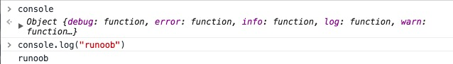

JavaScript 出力
JavaScript には印刷や出力を行う関数はありません。
JavaScript データの表示
JavaScript はさまざまな方法でデータを出力できます：
- 使用window.alert()警告ボックスを表示します。
- 使用document.write()メソッドでコンテンツを HTML ドキュメントに書き込みます。
- 使用innerHTMLHTML 要素に書き込みます。
- 使用console.log()ブラウザのコンソールに書き込みます。
window.alert() を使用する
警告ボックスを表示してデータを表示できます：
例
<html>
<body>
<h1>私の最初のページ</h1>
<p>私の最初の段落。</p>
<script>
window.alert(5 + 6);
</script>
</body>
</html>
試してみる »
HTML 要素の操作
JavaScript から HTML 要素にアクセスするには、document.getElementById(id) メソッドを使用できます。
"id" 属性を使用して HTML 要素を識別し、innerHTML を使用して要素のコンテンツを取得または挿入します：
例
<html>
<body>
<h1>私の最初の Web ページ</h1>
<p id="demo">私の最初の段落</p>
<script>
document.getElementById("demo").innerHTML = "段落已修改。";
</script>
</body>
</html>
試してみる »
上記の JavaScript ステートメント（<script> タグ内）は、Web ブラウザで実行できます：
document.getElementById("demo")は id 属性を使用して HTML 要素を検索する JavaScript コードです。
innerHTML = "段落は修正されました。"は要素の HTML コンテンツ（innerHTML）を変更するための JavaScript コードです。
このチュートリアルでは
ほとんどの場合、このチュートリアルでは、上記の方法を使用して出力します：
上記の例では、id="demo" の <p> 要素を直接 HTML ドキュメントの出力に書き込みます：
HTML ドキュメントに書き込む
テスト目的で、JavaScript を HTML ドキュメントに直接書き込むことができます：
例
<html>
<body>
<h1>私の最初の Web ページ</h1>
<p>私の最初の段落。</p>
<script>
document.write(Date());
</script>
</body>
</html>
試してみる »
 |
document.write() を使用すると、ドキュメントにコンテンツを書き込むことができます。 ドキュメントの読み込みが完了した後に document.write を実行すると、HTML ページ全体が上書きされます。 |
|---|
例
<html>
<body>
<h1>私の最初の Web ページ</h1>
<p>私の最初の段落。</p>
<button onclick="myFunction()">クリックして</button>
<script>
function myFunction() {
document.write(Date());
}
</script>
</body>
</html>
試してみる »
コンソールに書き込む
ブラウザがデバッグをサポートしている場合は、以下を使用できますconsole.log()メソッドでブラウザに JavaScript の値を表示します。
ブラウザで F12 を押してデバッグモードを有効にし、デバッグウィンドウで "Console" メニューをクリックします。
例
<html>
<body>
<h1>私の最初の Web ページ</h1>
<script>
a = 5;
b = 6;
c = a + b;
console.log(c);
</script>
</body>
</html>
試してみる »
例：console スクリーンショット：

ご存知ですか？
|
プログラムにおけるデバッグとは、バグ（エラー）をテスト、検索、削減するプロセスです。 |
|---|
xmbuxi
896***31@qq.com
参考アドレス
console.log() の用途
主に JavaScript のデバッグを容易にするためのもので、ページに出力した内容を確認できます。
alert と比較した場合の利点は次のとおりです：
構造化されたものを確認できます。alert の場合、オブジェクトを表示すると [object object] と表示されますが、console ではオブジェクトの内容を確認できます。
console はページの操作を妨げません。alert で内容を表示するとページが停止しますが、console で出力してもページは正常に操作できます。
console には非常に豊富な内容が含まれています。コンソールに console と入力すると、次の内容を確認できます：

xmbuxi
896***31@qq.com
参考アドレス
kera
891***636@qq.com
参考アドレス
document.write はページのコンテンツストリームに直接書き込むものです。書き込む前に document.open を呼び出さなかった場合、ブラウザは自動的に open を呼び出します。書き込みが終わって閉じた後にこの関数を再度呼び出すと、ページが書き換えられます。
innerHTML は DOM ページ要素のプロパティであり、その要素の HTML コンテンツを表します。特定の要素を正確に指定して変更できます。document の内容を変更したい場合は、document.documentElement.innerElement を変更する必要があります。
innerHTML は多くの場合 document.write よりも優れています。その理由は、ページのどの部分を更新するかをより正確に制御できるためです。
kera
891***636@qq.com
参考アドレス
大神
222***8080@qq.com
DOM の説明
あなたはよく見かけるでしょうdocument.getElementById("id")。
このメソッドは HTML DOM で定義されています。
DOM（Document Object Model）（ドキュメントオブジェクトモデル）は、HTML 要素にアクセスするための正式な W3C 標準です。
形式 <script>
古い例では、<script> タグ内で type="text/javascript" を使用している場合があります。
現在はその必要はありません。
JavaScript は、すべての現代のブラウザおよび HTML5 におけるデフォルトのスクリプト言語です。
スクリプトの位置
<head> または <body> 内の JavaScript
外部スクリプトは <script> タグを含めることはできません。
データの出力
window.alert() 警告ボックスを表示する。
document.write() メソッドはコンテンツを HTML ドキュメントに書き込みます。
innerHTML HTML 要素に書き込みます。
console.log() ブラウザのコンソールに書き込みます。
出力内容
document.write() を使用してドキュメントに内容を書き込みます。
ドキュメントの読み込みが完了した後に document.write を実行すると、HTML ページ全体が上書きされます。
コンソールに書き込む（デバッグモード）
console.log() メソッドを使用して、ブラウザに JavaScript の値を表示します。
F12 を押してデバッグモードを有効にし、デバッグウィンドウで "Console" メニューをクリックします。
大神
222***8080@qq.com
时妖
129***0814@qq.com
window.alert の補足：
window.alert(5+6) 与 window.alert("5+6")出力される値は異なります。window.alert(5+6) は 11 を出力しますが、window.alert("5+6") は 5+6 を出力します。これは、引用符を使用すると引用符内が文字列と見なされ、引用符内の内容がそのまま出力されるためです。
試してみる »
时妖
129***0814@qq.com
jingks
249***9451@qq.com
console.log を装飾する
console.log には表示スタイルを追加できます。例：
console.log('%cfuck', 'font-size:20px')IIFE でラップしてみます：
(function() { var _log = console.log; console.log = function() { if (typeof(arguments[0]) != 'object' && typeof(arguments[0]) != 'function' && arguments.length == 1) { _log.call(console, '%c' + arguments[0], "text-shadow: 0 1px 0 #ccc,0 2px 0 #c9c9c9,0 3px 0 #bbb,0 4px 0 #b9b9b9,0 5px 0 #aaa,0 6px 1px rgba(0,0,0,.1),0 0 5px rgba(0,0,0,.1),0 1px 3px rgba(0,0,0,.3),0 3px 5px rgba(0,0,0,.2),0 5px 10px rgba(0,0,0,.25),0 10px 10px rgba(0,0,0,.2),0 20px 20px rgba(0,0,0,.15);font-size:5em") } else { _log.call(console, ...arguments) } } })()コードの意味は、console に引数が1つだけで、それが関数やオブジェクトでもない場合は、私たちが定義したスタイルを使用し、それ以外の場合は console のデフォルト入力を使用するということです。そして、Tampermonkey などのプラグインを使用してページ読み込み時にこの関数をロードすれば、従来の退屈なデバッグに別れを告げることができます。もちろん、スタイルライブラリを書いたり、ランダム関数を書いたりして、毎回 console にサプライズを持たせることもできます。
jingks
249***9451@qq.com
思幼安
132***7010@qq.com
参照先
ドキュメントの読み込み完了後に document.write を実行すると、HTML ページ全体が上書きされてしまう問題を解決します
<button onclick="winTest()">按钮</button> function winTest() { var txt1 = "This is a new window."; var txt2 = "This is a test."; document.open("text/html","replace");//加上 document.writeln(txt1); document.write(txt2); document.close();//加上 }試してみる »
「ボタン」をクリックすると、ページに結果が表示されます：
注：このメソッドは open() メソッドで開かれたドキュメントストリームを閉じ、キャッシュされたすべての出力内容を強制的に表示します。write() メソッドを使用してドキュメントを動的に出力する場合、その際には close() メソッドを呼び出して、すべてのドキュメント内容が確実に表示されるようにする必要があることを覚えておいてください。document.write() は document.close() メソッドを暗黙的に呼び出しません。そうでなければ、例 2 にはThis is a new window.内容がなくなってしまいます
一度 close() を呼び出したら、再度 write() を呼び出すべきではありません。これは暗黙的に open() を呼び出して現在のドキュメントを消去し、新しいドキュメントを開始することになるからです。
ページの読み込み後、ブラウザの出力ストリームは自動的に閉じられます。この後、遅延スクリプト [setTimeout()] や onload で実行されるメソッドなど、現在のページに対して操作を行う document.write() メソッドは、新しい出力ストリームを開きます。それは現在のページの内容（ソースドキュメントのすべての変数や値を含む）を消去します。
思幼安
132***7010@qq.com
参照先
陈飘
116***5073@qq.com
document.getElementByle() と document.write() の違い
document.write() メソッドは2つの用途に使用できます：
その第 2 の点が document.getElementByle() とは異なります。前者はページのすべての内容を消去してから新しい内容を生成する、つまり「ドキュメントを上書き」します。
<script> function myFunction() { document.write("糟糕，文档丢失了") } </script> <button type="bulbon" onclick="myFunction()">覆盖文档</button>ボタンをクリックすると、括弧内の内容がドキュメントをすべて上書きします。
後者：<script> document.getElementById("three").innerHTML="段落已修改。"; </script>これは単に id が three の内部の内容を置き換えるだけで、ページを上書きしません。
陈飘
116***5073@qq.com
白色羽毛
166***9869@qq.com
console.log()使い方も C 言語のように%s変数を使用することができます：
var hello = 'hello'; var one = 1; console.log('%s world', hello) console.log('%d + 1 = 3', one)白色羽毛
166***9869@qq.com